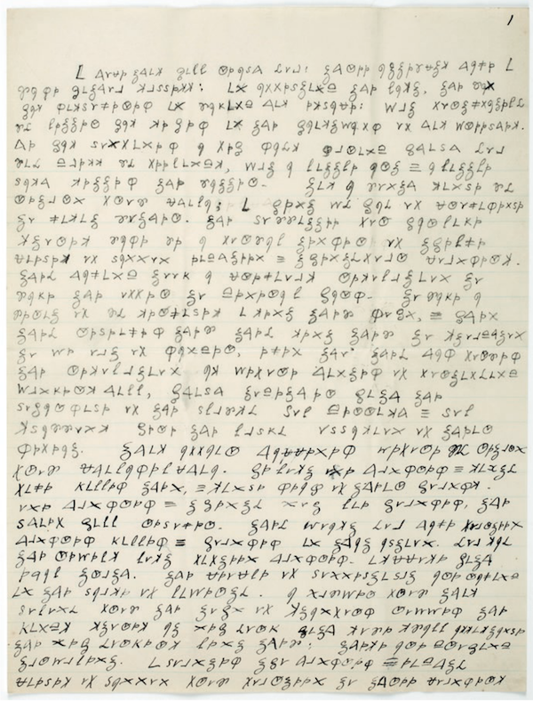

<!DOCTYPE html>
<html lang="en">
  <head>
    <meta charset="utf-8" />
    <meta name="viewport" content="width=device-width, initial-scale=1.0, maximum-scale=1.0, user-scalable=no" />

    <title></title>
    <link rel="stylesheet" href="dist/reveal.css" />
    <link rel="stylesheet" href="dist/theme/night.css" id="theme" />
    <link rel="stylesheet" href="plugin/highlight/zenburn.css" />
	<link rel="stylesheet" href="css/layout.css" />
	<link rel="stylesheet" href="plugin/customcontrols/style.css">


    <script defer src="dist/fontawesome/all.min.js"></script>

	<script type="text/javascript">
		var forgetPop = true;
		function onPopState(event) {
			if(forgetPop){
				forgetPop = false;
			} else {
				parent.postMessage(event.target.location.href, "app://obsidian.md");
			}
        }
		window.onpopstate = onPopState;
		window.onmessage = event => {
			if(event.data == "reload"){
				window.document.location.reload();
			}
			forgetPop = true;
		}

		function fitElements(){
			const itemsToFit = document.getElementsByClassName('fitText');
			for (const item in itemsToFit) {
				if (Object.hasOwnProperty.call(itemsToFit, item)) {
					var element = itemsToFit[item];
					fitElement(element,1, 1000);
					element.classList.remove('fitText');
				}
			}
		}

		function fitElement(element, start, end){

			let size = (end + start) / 2;
			element.style.fontSize = `${size}px`;

			if(Math.abs(start - end) < 1){
				while(element.scrollHeight > element.offsetHeight){
					size--;
					element.style.fontSize = `${size}px`;
				}
				return;
			}

			if(element.scrollHeight > element.offsetHeight){
				fitElement(element, start, size);
			} else {
				fitElement(element, size, end);
			}		
		}


		document.onreadystatechange = () => {
			fitElements();
			if (document.readyState === 'complete') {
				if (window.location.href.indexOf("?export") != -1){
					parent.postMessage(event.target.location.href, "app://obsidian.md");
				}
				if (window.location.href.indexOf("print-pdf") != -1){
					let stateCheck = setInterval(() => {
						clearInterval(stateCheck);
						window.print();
					}, 250);
				}
			}
	};


        </script>
  </head>
  <body>
    <div class="reveal">
      <div class="slides"><section  data-markdown><script type="text/template"><!-- .slide: class="drop" data-background-opacity="0.5" data-background-image="enigma-christian-lendl.png" -->
<div class="" style="position: absolute; left: 0px; top: 0px; height: 700px; width: 960px; min-height: 700px; display: flex; flex-direction: column; align-items: center; justify-content: center" absolute="true">

## Can you keep a secret?

<small>

[https://shawngraham.github.io/hist1900/assets/slides/jan23](https://shawngraham.github.io/hist1900/assets/slides/jan23)

</small>
</div></script></section><section  data-markdown><script type="text/template"><!-- .slide: class="drop" -->
<div class="" style="position: absolute; left: 0px; top: 0px; height: 700px; width: 960px; min-height: 700px; display: flex; flex-direction: column; align-items: center; justify-content: center" absolute="true">

Wr wkh vwxghqw doo ri dfdghpld lv d frgh zdlwlqj wr eh fudfnhg.
</div>

<aside class="notes"><p>when hardly anyone can read, &#39;writing&#39; is a secret code. But when either a certain number of people are literate - or your enemies are - then another layer has to be added. Why do we keep secrets?</p>
</aside></script></section><section  data-markdown><script type="text/template"><!-- .slide: class="drop" -->
<div class="" style="position: absolute; left: 0px; top: 0px; height: 700px; width: 960px; min-height: 700px; display: flex; flex-direction: column; align-items: center; justify-content: center" absolute="true">

<div align="left"><small>

> The multiple human needs and desires that demand privacy among two or more people in the midst of social life must inevitably lead to cryptology wherever men thrive and wherever they write. Cultural diffusion seems a less likely explanation for its occurrence in so many areas, many of them distant and isolated” (Kahn 1967, p. 84).

Cryptology: systems for 'secret' writing

Cryptanalysis: systems for revealing those secrets

</small></div>
</div></script></section><section  data-markdown><script type="text/template"><!-- .slide: class="drop" -->
<div class="" style="position: absolute; left: 0px; top: 0px; height: 700px; width: 960px; min-height: 700px; display: flex; flex-direction: column; align-items: center; justify-content: center" absolute="true">


</div>

<aside class="notes"><p>Dooley tells the story of a spy embedded with the revolutionaries in 1775 Boston.  Mary Wenwood, ex-wife of a revolutionary called Godfrey Wenwood, wanted to send a letter from her new lover, Dr. Benjamin Church Jr, to a british officer in Boston. Godfrey Wenwood didn&#39;t deliver it; sat on it instead, not wanting to be associated with the british officers. She asked him to courier <em>another</em> letter some time later. This time, Wenwood took it to Washington, and they opened it. Seeing it in code, they arrested Mary. They were able to crack the code and the contents were damning, revealing Church to be a spy embedded amonst important revolutionaries. Washington had some officers familiar with cyphers, and they broke into two teams to try to crack the code.</p>
</aside></script></section><section  data-markdown><script type="text/template"><!-- .slide: class="drop" -->
<div class="" style="position: absolute; left: 0px; top: 0px; height: 700px; width: 960px; min-height: 700px; display: flex; flex-direction: column; align-items: center; justify-content: center" absolute="true">


</div>

<aside class="notes"><p>Church arrested; eventually sent into exile.</p>
</aside></script></section><section  data-markdown><script type="text/template"><!-- .slide: class="drop" -->
<div class="" style="position: absolute; left: 0px; top: 0px; height: 700px; width: 960px; min-height: 700px; display: flex; flex-direction: column; align-items: center; justify-content: center" absolute="true">

Draw out the 'assemblage' of ideas that makes that story intelligible. What things must come together for such a story to have happened?
</div>

<aside class="notes"><p>things like - why were other people versed in ciphers? common means of communication when post/messages couldn&#39;t be sealed shut; maybe an interest out of religion, interpretation of books of the bible; what were communications like?</p>
</aside></script></section><section  data-markdown><script type="text/template"><!-- .slide: class="drop" -->
<div class="" style="position: absolute; left: 0px; top: 0px; height: 700px; width: 960px; min-height: 700px; display: flex; flex-direction: column; align-items: center; justify-content: center" absolute="true">

_London, 1772._

<div align="left">
<small>

I have been asked by my superiors to give a brief demonstration of the surprising effectiveness of even the simplest techniques of the new-fangled _Social Networke Analysis_ in the pursuit of those who would seek to undermine the liberty enjoyed by His Majesty’s subjects. This is in connection with the discussion of the role of “metadata” in [certain recent events](http://www.guardian.co.uk/world/2013/jun/08/nsa-prism-server-collection-facebook-google) and the assurances of [various respectable parties](https://www.eff.org/deeplinks/2013/06/why-metadata-matters) that the government was merely “sifting through this so-called metadata” and that the “information acquired does not include the content of any communications”. I will show how we can use this “metadata” to find key persons involved in terrorist groups operating within the Colonies at the present time. I shall also endeavour to show how these methods work in what might be called a _relational_ manner.

</small>
</div>
</div></script></section><section  data-markdown><script type="text/template"><!-- .slide: class="drop" -->
<div class="" style="position: absolute; left: 0px; top: 0px; height: 700px; width: 960px; min-height: 700px; display: flex; flex-direction: column; align-items: center; justify-content: center" absolute="true">

```fallback
                           StAndrewsLodge LoyalNine NorthCaucus LongRoomClub TeaParty Bostoncommittee LondonEnemies 
Adams.John                      0         0           1            1        0               0             0
Adams.Samuel                    0         0           1            1        0               1             1
Allen.Dr                        0         0           1            0        0               0             0
Appleton.Nathaniel              0         0           1            0        0               1             0
Ash.Gilbert                     1         0           0            0        0               0             0
Austin.Benjamin                 0         0           0            0        0               0             1
Austin.Samuel                   0         0           0            0        0               0             1
Avery.John                      0         1           0            0        0               0             1
Baldwin.Cyrus                   0         0           0            0        0               0             1
Ballard.John                    0         0           1            0        0               0             0
```


*Sometimes, it's the* pattern *of communications that is key*
</div></script></section><section  data-markdown><script type="text/template"><!-- .slide: class="drop" -->
<div class="" style="position: absolute; left: 0px; top: 0px; height: 700px; width: 960px; min-height: 700px; display: flex; flex-direction: column; align-items: center; justify-content: center" absolute="true">


</div></script></section><section  data-markdown><script type="text/template"><!-- .slide: class="drop" -->
<div class="" style="position: absolute; left: 0px; top: 0px; height: 700px; width: 960px; min-height: 700px; display: flex; flex-direction: column; align-items: center; justify-content: center" absolute="true">


[Kieran Healy, 2013. Using Metadata to find Paul Revere](https://kieranhealy.org/blog/archives/2013/06/09/using-metadata-to-find-paul-revere/)
</div>

<aside class="notes"><p>The secret to knowing whether a message is worth knowing is sometimes in the pattern of connections of its authors, or its own movements, etc: broader assemblage!</p>
</aside></script></section><section  data-markdown><script type="text/template"><!-- .slide: class="drop" -->
<div class="" style="position: absolute; left: 0px; top: 0px; height: 700px; width: 960px; min-height: 700px; display: flex; flex-direction: column; align-items: center; justify-content: center" absolute="true">

<div align = "left">

a code: 'variable sized elements that have meaning in the plaintext language' - syllables, words, phrases (Dooley, 5); thousands of substitutions

a cipher: a transformation from plaintext according to some transformation (Dooley, 5-6); 'small fixed number of substitution elements'

</div>
</div></script></section><section  data-markdown><script type="text/template"><!-- .slide: class="drop" -->
<div class="" style="position: absolute; left: 0px; top: 0px; height: 700px; width: 960px; min-height: 700px; display: flex; flex-direction: column; align-items: center; justify-content: center" absolute="true">

Remember what I said about Clytemnestra learning in Argos that the war had been won at Troy...
<iframe width="560" height="315" src="https://www.youtube.com/embed/i6LGJ7evrAg?start=95" title="YouTube video player" frameborder="0" allow="accelerometer; autoplay; clipboard-write; encrypted-media; gyroscope; picture-in-picture; web-share" allowfullscreen></iframe>

[https://youtu.be/i6LGJ7evrAg?t=95](https://youtu.be/i6LGJ7evrAg?t=95)
</div>

<aside class="notes"><p>just think of the poor bastards who have to hang around up there, waiting to light the fire. can only be used once, and you have to know in advance what the message actually is; all that this system conveys or encodes is a single yes/no: fire = yes, no fire = no.</p>
</aside></script></section><section  data-markdown><script type="text/template"><!-- .slide: class="drop" -->
<div class="" style="position: absolute; left: 0px; top: 0px; height: 700px; width: 960px; min-height: 700px; display: flex; flex-direction: column; align-items: center; justify-content: center" absolute="true">

Polybius - (c 200 - c 118 BC)

<split even gap ="3">


</split>

[Polybius book 10](https://penelope.uchicago.edu/Thayer/E/Roman/Texts/Polybius/10*.html#45.6)
</div>

<aside class="notes"><p>letters could be rearranged in the square; hold up two torches at each end to signal ready to go; hold up torches on the left to indicate which row, then torches on the right to indicate which column; polybius describes this as a way of perfecting communications in war time. Notice the need to coordinate timing.</p>
</aside></script></section><section  data-markdown><script type="text/template"><!-- .slide: class="drop" -->
<div class="" style="position: absolute; left: 0px; top: 0px; height: 700px; width: 960px; min-height: 700px; display: flex; flex-direction: column; align-items: center; justify-content: center" absolute="true">

(also, check out the 'scytale')


</div>

<aside class="notes"><p>Used by spartans, apparently... could be older. A kind of transposition cypher.</p>
</aside></script></section><section  data-markdown><script type="text/template"><!-- .slide: class="drop" -->
<div class="" style="position: absolute; left: 0px; top: 0px; height: 700px; width: 960px; min-height: 700px; display: flex; flex-direction: column; align-items: center; justify-content: center" absolute="true">


YHQL YLGL YLFL
</div>

<aside class="notes"><p>The &#39;caesar shift&#39; cyper involves writing the alphabet down twice, but the second row should be shifted some arbitrary number. Many variations on this exist. Anyway, Suetonius tells us he used this for his political machinations; in his own writings Caesar tells us while in gaul he just wrote latin messages in greek characters, which is also a kind of substitution cipher. Anyway, we&#39;re talking 1st century BCE here</p>
</aside></script></section><section  data-markdown><script type="text/template"><!-- .slide: class="drop" -->
<div class="" style="position: absolute; left: 0px; top: 0px; height: 700px; width: 960px; min-height: 700px; display: flex; flex-direction: column; align-items: center; justify-content: center" absolute="true">

[Al-Kindi](https://plato.stanford.edu/entries/al-kindi) - one of the great philosophers

_On Extracting Obscured Correspondence_

<div align="left">
<small>

> One way to solve an encrypted message, if we know its language, is to find a different plaintext of the same language long enough to fill one sheet or so, and then we count the occurrences of each letter. We call the most frequently occurring letter the "first", the next most occurring letter the "second", the following most occurring letter the "third", and so on, until we account for all the different letters in the plaintext sample. Then we look at the cipher text we want to solve and we also classify its symbols. We find the most occurring symbol and change it to the form of the "first" letter of the plaintext sample, the next most common symbol is changed to the form of the "second" letter, and the following most common symbol is changed to the form of the "third" letter, and so on, until we account for all symbols of the cryptogram we want to solve.

</small>
</div>
</div>

<aside class="notes"><p>9th century; philosopher, worked in Baghdad which at that time was a flourishing centre of scholarship. He wrote on a wide variety of subjects. Often called &#39;father of cryptanalysis&#39;; Wikipedia is really good on a lot of these subjects.</p>
</aside></script></section><section  data-markdown><script type="text/template"><!-- .slide: class="drop" -->
<div class="" style="position: absolute; left: 0px; top: 0px; height: 700px; width: 960px; min-height: 700px; display: flex; flex-direction: column; align-items: center; justify-content: center" absolute="true">

Meanwhile, in Europe...

 - Roger Bacon (13th century) describes various systems of secret writing known to him; may also have encrypted the secret of the Philosopher's Stone in the same description using a grille (piece of card with holes cut out, fits over the page, reveals words)
 - Otherwise, fairly behind
</div></script></section><section  data-markdown><script type="text/template"><!-- .slide: class="drop" -->
<div class="" style="position: absolute; left: 0px; top: 0px; height: 700px; width: 960px; min-height: 700px; display: flex; flex-direction: column; align-items: center; justify-content: center" absolute="true">

Early Modern Europe (16th to about 1800 ish)

<small>

- remember, intro of a new information technology in Europe (moveable type) is also a marker for this period
- faster circulation of ideas
- new ideas around relationship of people to God, to each other, nature of government, what is a state, anyway... all these things up for discussion
- coinciding with the European age of discovery too...

</small>

By God and Harry, we need some secret writing _now_!
</div></script></section><section  data-markdown><script type="text/template"><!-- .slide: class="drop" -->
<div class="" style="position: absolute; left: 0px; top: 0px; height: 700px; width: 960px; min-height: 700px; display: flex; flex-direction: column; align-items: center; justify-content: center" absolute="true">

Francis Bacon & the Bi-Literal Cipher


</div>

<aside class="notes"><p>self-made man during the Elizabethan Age; contemporary of Shakespeare
-in &#39;De Augmentis Scientiarum&#39; of 1623 lays out his sytem. Works out that you could represent all 24 letters (no J, no U) using just two letters, a &amp; b <strong>if</strong> you did it in groups of 5 - 2 raised to the 5th power (2<em>2</em>2<em>2</em>2) gives us 32 distinct patterns (HEY DOES THIS REMIND YOU OF ANYTHING 2 to th 8 is 256, all the standard characters on a typewriter including upper, lowercase, standardized as ASCII)</p>
</aside></script></section><section  data-markdown><script type="text/template"><!-- .slide: class="drop" -->
<div class="" style="position: absolute; left: 0px; top: 0px; height: 700px; width: 960px; min-height: 700px; display: flex; flex-direction: column; align-items: center; justify-content: center" absolute="true">


No*w* is *t*he winter of *ou*r disc*o*nt*e*nt
</div>

<aside class="notes"><ul>
<li>standard substitution. easy to break with frequency analysis. </li>
<li>so bacon says, hide in a regular message, but use a regular font for a, italic for b - steganography</li>
<li>typesetting conventions were all over the place in those days, use of different fonts at once woudn&#39;t have been remarkable</li>
<li>does lead to a bit of conspiracy theories</li>
</ul>
</aside></script></section><section  data-markdown><script type="text/template"><!-- .slide: class="drop" -->
<div class="" style="position: absolute; left: 0px; top: 0px; height: 700px; width: 960px; min-height: 700px; display: flex; flex-direction: column; align-items: center; justify-content: center" absolute="true">

Nomenclators
- mixture of subsitution cyphers and codebooks
- still susceptible to frequency analysis and context-dependent guessing
- popular in diplomatic circles 1400 - to about 1800
- Mary Queen of Scotts- nomeclator broken, her attempt to seize power thwarted
</div></script></section><section  data-markdown><script type="text/template"><!-- .slide: class="drop" -->
<div class="" style="position: absolute; left: 0px; top: 0px; height: 700px; width: 960px; min-height: 700px; display: flex; flex-direction: column; align-items: center; justify-content: center" absolute="true">


</div>

<aside class="notes"><p>Black chambers, break the nomenclators</p>
<p>polyalphabetic subsistution cyphers (defeats frequency analysis) of different kinds; </p>
<p>Blaise de Vigenère, french diplomat mid 16th century, spends time in Rome and becomes interested in how to better encipher messages (presumably got talking to the Pope&#39;s people)
top row is plaintext, first column is cipher key. You use the key to select the row/column to turn plain into cipher.</p>
</aside></script></section><section  data-markdown><script type="text/template"><!-- .slide: class="drop" -->
<div class="" style="position: absolute; left: 0px; top: 0px; height: 700px; width: 960px; min-height: 700px; display: flex; flex-direction: column; align-items: center; justify-content: center" absolute="true">

Ok, what about the *media* for all these codes?

<split even gap ="3">


![[]]
</split>
</div>

<aside class="notes"><ul>
<li>paper, whatever; but ciphers/code no good if the message doesn&#39;t get there in time. aside from carrying there by horse, cart, boat, not much innovation for a while...</li>
<li>in technology, many solutions to a common problem all seem to emerge at the same time, from the broader context; semaphore or flags/torches were experimented with throughout, but begin to be mechanized in 18th century. </li>
<li>the system developed by Claude Chappe emerges in the context of the french revolution and the need to coordinate the military against revolutionary france&#39;s enemies. Afer much experimentation, came up with a system of angles that could be seen/recognized at a distance, with 7 possible angles for each arm and 4 angles for the cross piece, giving 7x7x4 = 196 symbols; each station had a code book so that signals could stand for phrases. To send a message, a series of 3 steps - set up, transmission/movement of the arms, completion. each station would acknowledge receipt of a symbol before copying it to send it onwards. At its height, 534 stations, &gt; 5000 km; Paris to the furthest reaches of France (and into French controlled Italy, Venice) in 3 days (only transmits during the day). each 10 km apart</li>
</ul>
<p>in count of monte cristo, the count hacks the system - bribes the operators - to send false information, setting off a financial panic.</p>
<p>In 1844 Samuel Morse sends a message through electric telegraphy from Washington to Baltimore via a wire; the day of visual telegraphy was over.</p>
<p>one of these built around Halifax 1800 apparently; meant to go all the way across new brunswick, never happened</p>
</aside></script></section><section  data-markdown><script type="text/template"><!-- .slide: class="drop" -->
<div class="" style="position: absolute; left: 0px; top: 0px; height: 700px; width: 960px; min-height: 700px; display: flex; flex-direction: column; align-items: center; justify-content: center" absolute="true">

_When you hear a story like I've told you today, ask yourself_

Where are the gaps?

Where are the women in this story?

Who/What is left out?

What other things had to have happened to support all this?

Remember the Brecht poem from last week.
</div></script></section><section  data-markdown><script type="text/template"><!-- .slide: class="drop" -->
<div class="" style="position: absolute; left: 0px; top: 0px; height: 700px; width: 960px; min-height: 700px; display: flex; flex-direction: column; align-items: center; justify-content: center" absolute="true">

Lzqn Zxftr Ygk Dgkt Yqleofqzofu Lzxyy!

oy ngx rteohitk zit dtllqut ltfr qf tdqos lqnofu 'rteohitktr!'
</div></script></section></div>
    </div>

    <script src="dist/reveal.js"></script>

    <script src="plugin/markdown/markdown.js"></script>
    <script src="plugin/highlight/highlight.js"></script>
    <script src="plugin/zoom/zoom.js"></script>
    <script src="plugin/notes/notes.js"></script>
    <script src="plugin/math/math.js"></script>
	<script src="plugin/mermaid/mermaid.js"></script>
	<script src="plugin/chart/chart.min.js"></script>
	<script src="plugin/chart/plugin.js"></script>
	<script src="plugin/customcontrols/plugin.js"></script>

    <script>
      function extend() {
        var target = {};
        for (var i = 0; i < arguments.length; i++) {
          var source = arguments[i];
          for (var key in source) {
            if (source.hasOwnProperty(key)) {
              target[key] = source[key];
            }
          }
        }
        return target;
      }

	  function isLight(color) {
		let hex = color.replace('#', '');

		// convert #fff => #ffffff
		if(hex.length == 3){
			hex = `${hex[0]}${hex[0]}${hex[1]}${hex[1]}${hex[2]}${hex[2]}`;
		}

		const c_r = parseInt(hex.substr(0, 2), 16);
		const c_g = parseInt(hex.substr(2, 2), 16);
		const c_b = parseInt(hex.substr(4, 2), 16);
		const brightness = ((c_r * 299) + (c_g * 587) + (c_b * 114)) / 1000;
		return brightness > 155;
	}

	var bgColor = getComputedStyle(document.documentElement).getPropertyValue('--r-background-color').trim();
	var isLight = isLight(bgColor);

	if(isLight){
		document.body.classList.add('has-light-background');
	} else {
		document.body.classList.add('has-dark-background');
	}

      // default options to init reveal.js
      var defaultOptions = {
        controls: true,
        progress: true,
        history: true,
        center: true,
        transition: 'default', // none/fade/slide/convex/concave/zoom
        plugins: [
          RevealMarkdown,
          RevealHighlight,
          RevealZoom,
          RevealNotes,
          RevealMath.MathJax3,
		  RevealMermaid,
		  RevealChart,
		  RevealCustomControls,
        ],


    	allottedTime: 120 * 1000,

		mathjax3: {
			mathjax: 'plugin/math/mathjax/tex-mml-chtml.js',
		},
		markdown: {
		  gfm: true,
		  mangle: true,
		  pedantic: false,
		  smartLists: false,
		  smartypants: false,
		},

		mermaid: {
			theme: isLight ? 'default' : 'dark',
		},

		customcontrols: {
			controls: [
			]
		},
      };

      // options from URL query string
      var queryOptions = Reveal().getQueryHash() || {};

      var options = extend(defaultOptions, {"width":960,"height":700,"margin":0.04,"controls":true,"progress":true,"slideNumber":false,"transition":"fade","transitionSpeed":"default"}, queryOptions);
    </script>

    <script>
      Reveal.initialize(options);
    </script>
  </body>

  <!-- created with Advanced Slides -->
</html>
